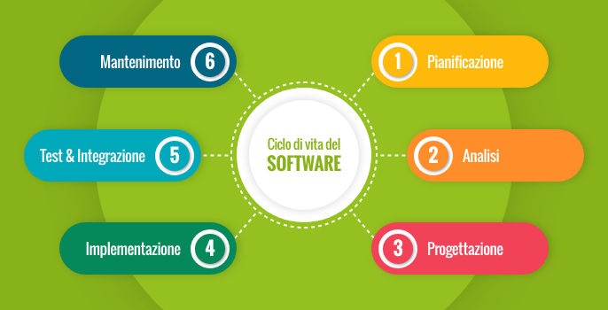
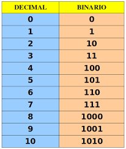
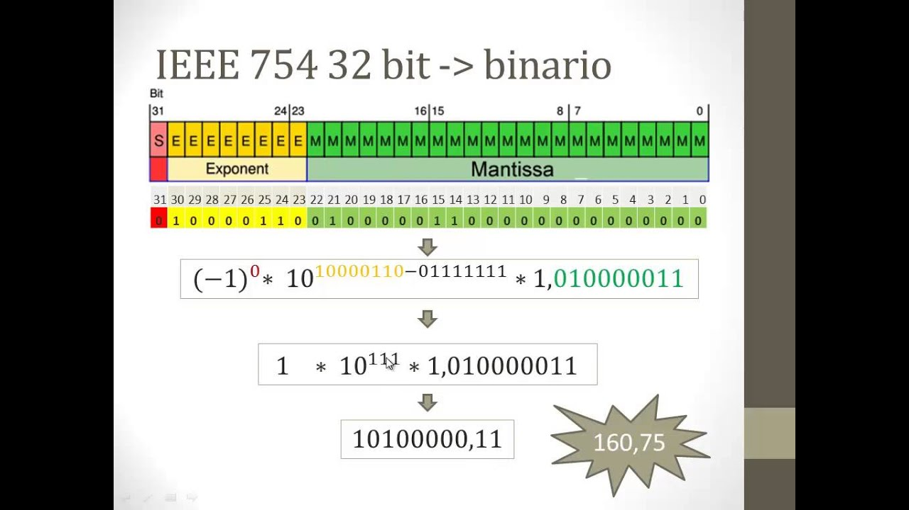
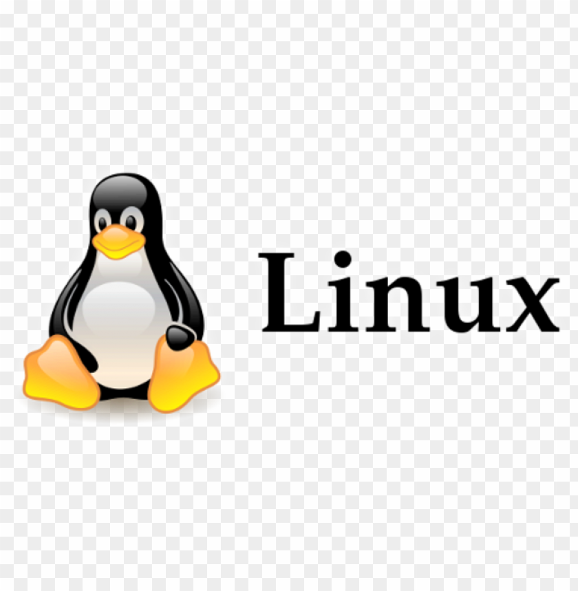

TECNLOGIE E PROGETTAZIONE DI SISTEMI INFORMATICI E TELECOMUNICAZIONI
INTRODUZIONE ALLA MATERIA
La materia "Tecnologie e Progettazione di Sistemi Informatici e Telecomunicazioni" è fondamentale nel triennio dell'Istituto Tecnico Informatico. Durante il percorso di studi, gli studenti approfondiscono aspetti avanzati legati al funzionamento e alla progettazione di sistemi informatici, alla gestione delle reti e alla sicurezza informatica. Si esplorano le architetture hardware e software, con particolare attenzione all'interazione tra i vari componenti e alla progettazione di sistemi efficienti. L'apprendimento si sviluppa anche nel campo delle telecomunicazioni, dove gli studenti acquisiscono le competenze necessarie per configurare e ottimizzare reti locali e globali, comprendendo i protocolli di comunicazione e le tecnologie emergenti. Un altro aspetto chiave riguarda la programmazione e lo sviluppo software, con un focus sulla metodologia di progettazione, sulla gestione dei database e sulle applicazioni web. Si affrontano tematiche legate all'Internet of Things, alla cybersecurity e alla gestione di progetti in ambito ICT, fornendo una preparazione completa e pratica attraverso laboratori e attività progettuali.
LA TEORIA
"Tecnologie e Progettazione di Sistemi Informatici e Telecomunicazioni" è una materia che approfondisce i principi teorici dell'informatica e delle telecomunicazioni. Gli studenti studiano le architetture hardware e software, i protocolli di rete, la progettazione di sistemi, la sicurezza informatica e le basi della programmazione. Si analizzano anche le tecnologie emergenti, come l'Internet of Things e la gestione dei dati, per comprendere il funzionamento dei sistemi informatici complessi e le loro applicazioni nel mondo reale.
GLI ARGOMENTI

Durante il triennio dell'Istituto Tecnico Informatico, la materia "Tecnologie e Progettazione di Sistemi Informatici e Telecomunicazioni" affronta diversi argomenti chiave. Si studiano le basi dell'architettura dei sistemi informatici, approfondendo il funzionamento dei processori, delle memorie e dei sistemi operativi. Vengono analizzati i protocolli di rete e le tecnologie di comunicazione, con particolare attenzione alla sicurezza informatica e alla protezione dei dati. La progettazione software occupa un ruolo centrale, includendo programmazione orientata agli oggetti, gestione dei database e sviluppo di applicazioni web. Si esplorano anche tematiche avanzate come l'Internet of Things, la virtualizzazione e la gestione di infrastrutture IT. L'approccio è teorico ma con una forte componente pratica, attraverso laboratori e progetti che permettono agli studenti di applicare le conoscenze acquisite
SISTEMA BINARIO

Il codice binario è il sistema di numerazione utilizzato dai computer per rappresentare e elaborare informazioni. Basato solo su due cifre, 0 e 1, il codice binario è alla base del funzionamento di ogni dispositivo digitale. Ogni cifra binaria, detta bit, corrisponde a un'unità di informazione minima. I computer usano sequenze di bit per rappresentare numeri, testi, immagini e suoni, attraverso operazioni logiche e matematiche.
LE CODIFICHE
Le codifiche sono metodi utilizzati per rappresentare le informazioni in formato digitale, facilitando la trasmissione, la memorizzazione e l'elaborazione dei dati. Esistono diversi tipi di codifica, ognuno con uno scopo specifico.
La codifica Unicode è un'evoluzione dell'ASCII e consente di rappresentare un numero molto più ampio di caratteri, incluse le lingue con alfabeti complessi come il cinese, l'arabo e il russo, garantendo la compatibilità globale.
l'IEEE

IEEE, è la più grande organizzazione tecnica professionale al mondo dedicata all'avanzamento della tecnologia per il beneficio dell'umanità. IEEE si occupa di pubblicazioni scientifiche, conferenze, standard tecnologici e attività educative per ingegneri e tecnologi in tutto il mondo.
Se invece intendi I.E.E. Industrie Elettromeccaniche Europee, è un'azienda italiana specializzata nella manutenzione e riparazione di macchine elettriche rotanti, operando in settori come trasporti, energia e industria manifatturiera.
TEOREMI: HAMMING E UTF8
Il codice di Hamming è un metodo di correzione degli errori utilizzato nelle telecomunicazioni e nei sistemi informatici. È un codice lineare che permette di rilevare e correggere errori su singoli bit, migliorando l'affidabilità della trasmissione dei dati2. Inventato da Richard Hamming, questo codice aggiunge bit di parità ai dati trasmessi, consentendo di individuare e correggere eventuali errori senza necessità di ritrasmissione.
La codifica UTF-8 (Unicode Transformation Format - 8 bit) è uno standard di codifica dei caratteri che permette di rappresentare qualsiasi simbolo Unicode utilizzando da 1 a 4 byte. È ampiamente utilizzata per la compatibilità con ASCII e per la gestione di testi multilingua su web e sistemi informatici. UTF-8 è efficiente perché utilizza un solo byte per i caratteri ASCII e più byte per quelli più complessi, garantendo una rappresentazione universale dei testi.
LINUX

Linux è un sistema operativo open source di tipo Unix-like, basato sul kernel Linux. È utilizzato in una vasta gamma di dispositivi, dai server ai computer desktop, fino agli smartphone e ai sistemi embedded. Creato da Linus Torvalds nel 1991, Linux è noto per la sua stabilità, sicurezza e flessibilità. Esistono molte distribuzioni Linux, come Ubuntu, Debian, Fedora e Arch Linux, ognuna con caratteristiche specifiche per diversi tipi di utenti e applicazioni
COMANDI LINUX
I comandi Linux permettono di interagire con il sistema operativo attraverso la riga di comando, offrendo un controllo preciso sulle operazioni. È possibile navigare tra le directory, gestire file e permessi, monitorare processi e configurare la rete. Alcuni comandi servono per visualizzare il contenuto delle cartelle, altri per modificare file o eseguire programmi. La gestione degli utenti e dei permessi è fondamentale per garantire sicurezza e organizzazione. Inoltre, Linux offre strumenti per la compressione dei file, la gestione delle connessioni di rete e l'automazione delle operazioni tramite script. Se vuoi approfondire un aspetto specifico, posso fornirti maggiori dettagli.
Attività Di Laboratorio
Le attività di laboratorio nella materia "Tecnologie e Progettazione di Sistemi Informatici e Telecomunicazioni" permettono agli studenti di applicare concretamente i concetti teorici studiati. Si svolgono esperimenti pratici su configurazioni di rete, programmazione software, gestione dei database e analisi della sicurezza informatica. Attraverso l'uso di strumenti e ambienti di sviluppo, gli studenti progettano e testano soluzioni informatiche reali, sviluppando competenze operative e risolvendo problemi tecnici in situazioni simulate. Questo approccio pratico favorisce l'apprendimento e prepara gli studenti alle sfide del mondo professionale